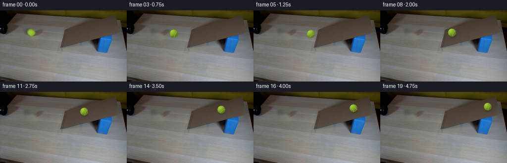
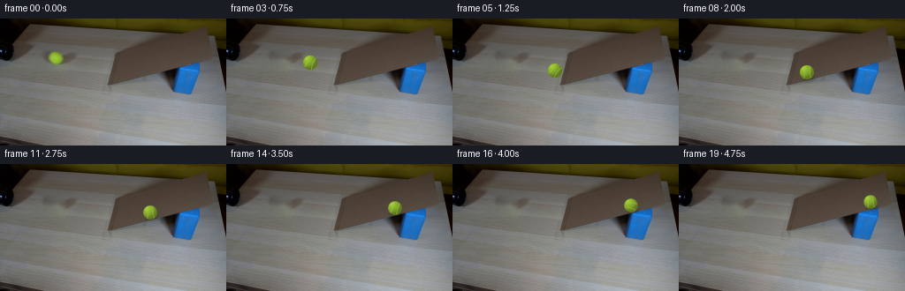
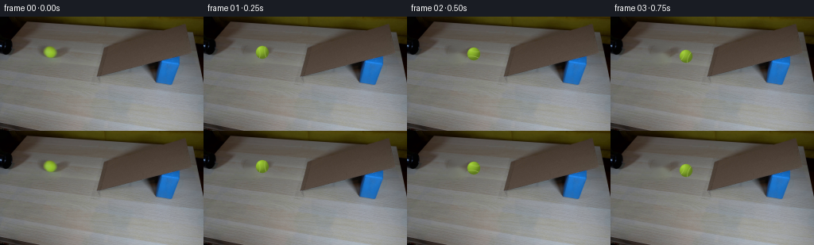

CODING AGENTS AS PIXEL WORLD MODELS
traex/GPT-5.6-Sol · 0021
点击播放 · 原生 RGB 像素
逐轮保存的候选
回放视频、检查图与代码变化。
每份候选均可单独播放。实际图片检查记录在下方工具轨迹中。
候选 01播放与检查图
点击播放 · 原生 RGB 像素

展开代码变化
--- 上一保存版本
+++ 本次保存版本
@@ -0,0 +1,184 @@
+"""Generate the requested locked-camera tennis-ball demonstration."""
+
+from pathlib import Path
+
+import cv2
+import numpy as np
+from PIL import Image
+
+import artifact_io
+
+
+HERE = Path(__file__).resolve().parent
+HEIGHT, WIDTH = 144, 256
+
+
+def clean_background(first: np.ndarray) -> np.ndarray:
+ """Remove the ball at the pipe mouth for use after the exact first frame."""
+ mask = np.zeros((HEIGHT, WIDTH), np.uint8)
+ # This compact ellipse covers the colored ball and its one-pixel antialiasing
+ # fringe, without removing the nearby end of the pipe.
+ cv2.ellipse(mask, (63, 45), (10, 9), 0, 0, 360, 255, -1, cv2.LINE_AA)
+ mask = cv2.dilate(mask, np.ones((3, 3), np.uint8), iterations=1)
+ return cv2.inpaint(first, mask, 4.0, cv2.INPAINT_TELEA)
+
+
+def ball_path() -> list[tuple[float, float, float]]:
+ """Centers and radii: free roll from pipe, then a slowing uphill roll."""
+ path: list[tuple[float, float, float]] = [(63.0, 44.5, 8.15)]
+
+ # The pipe points almost horizontally at the broad near end of the ramp.
+ # A tiny drop is visible before contact. The endpoint agrees exactly with
+ # the first point of the ramp phase below.
+ for frame in range(1, 7):
+ q = frame / 6.0
+ x = 63.0 + 64.0 * q
+ y = 44.5 + 4.4 * q
+ path.append((x, y, 8.15))
+
+ # Cardboard surface rises rightward in the image. Constant negative
+ # acceleration gives the ball the natural slowing expected uphill.
+ for frame in range(7, 20):
+ j = frame - 6
+ x = 127.0 + 9.60 * j - 0.205 * j * j
+ y = 48.9 - 0.205 * (x - 127.0)
+ radius = 8.15 - 0.0052 * (x - 127.0) # slight perspective recession
+ path.append((x, y, radius))
+ return path
+
+
+def add_shadow(frame: np.ndarray, cx: float, cy: float, radius: float,
+ contact: float) -> np.ndarray:
+ """Add a soft, low-contrast contact shadow on the cardboard."""
+ if contact <= 0.0:
+ return frame
+ mask = np.zeros((HEIGHT, WIDTH), np.float32)
+ center = (int(round(cx + 1.3)), int(round(cy + radius * 0.83)))
+ axes = (max(2, int(round(radius * 0.90))),
+ max(1, int(round(radius * 0.29))))
+ cv2.ellipse(mask, center, axes, -10, 0, 360, float(0.26 * contact), -1,
+ cv2.LINE_AA)
+ mask = cv2.GaussianBlur(mask, (0, 0), 1.7)
+ # The warm component in ambient light remains in a real cast shadow.
+ tint = np.array([17.0, 15.0, 12.0], dtype=np.float32)
+ result = frame.astype(np.float32)
+ result = result * (1.0 - mask[..., None]) + tint * mask[..., None]
+ return np.clip(result, 0, 255).astype(np.uint8)
+
+
+def render_ball(cx: float, cy: float, radius: float, angle: float):
+ """Render a softly antialiased, felt-textured rotating tennis ball patch."""
+ ss = 5
+ margin = 3
+ half = int(np.ceil(radius + margin))
+ size = 2 * half + 1
+
+ # Supersample at regular subpixel centers. Keeping color premultiplied
+ # avoids a fringe when the patch is reduced.
+ yy, xx = np.mgrid[0:size * ss, 0:size * ss].astype(np.float32)
+ x = (xx + 0.5) / ss - half
+ y = (yy + 0.5) / ss - half
+ u, v = x / radius, y / radius
+ d2 = u * u + v * v
+ inside = d2 <= 1.0
+ z = np.sqrt(np.maximum(0.0, 1.0 - d2))
+
+ # Diffuse sphere under the same upper-left illumination as the source.
+ light = np.array([-0.48, -0.62, 0.62], dtype=np.float32)
+ light /= np.linalg.norm(light)
+ ndotl = np.maximum(0.0, u * light[0] + v * light[1] + z * light[2])
+ shade = 0.65 + 0.37 * ndotl
+ shade *= 0.93 + 0.07 * z
+
+ # Felt flecks stay attached to the rotating ball, rather than flickering.
+ ca, sa = np.cos(angle), np.sin(angle)
+ ur = ca * u + sa * v
+ vr = -sa * u + ca * v
+ felt = (np.sin(31.0 * ur + 17.0 * vr)
+ + np.sin(47.0 * ur - 29.0 * vr + 0.7)
+ + np.sin(73.0 * ur + 11.0 * vr + 1.9)) / 3.0
+ shade *= 1.0 + 0.025 * felt
+
+ base = np.array([151.0, 194.0, 49.0], dtype=np.float32)
+ rgb = base[None, None, :] * shade[..., None]
+
+ # A restrained specular bloom matches the dim scientific setup.
+ spec = np.power(ndotl, 18.0) * 20.0
+ rgb += spec[..., None] * np.array([0.82, 0.92, 0.48], np.float32)
+
+ # Tennis-ball seam: two opposing, gently bowed portions of one loop.
+ seam_curve = 0.37 + 0.20 * vr * vr
+ seam_distance = np.abs(np.abs(ur) - seam_curve)
+ seam = np.clip((0.065 - seam_distance) / 0.026, 0.0, 1.0)
+ seam *= np.clip((z - 0.08) / 0.22, 0.0, 1.0)
+ seam_color = np.array([170.0, 199.0, 91.0], dtype=np.float32)
+ rgb = rgb * (1.0 - 0.58 * seam[..., None]) + seam_color * (0.58 * seam[..., None])
+
+ alpha = inside.astype(np.float32)
+ premul = rgb * alpha[..., None]
+ # Area reduction is exact for coverage and preserves the fuzzy soft edge.
+ premul = premul.reshape(size, ss, size, ss, 3).mean(axis=(1, 3))
+ alpha = alpha.reshape(size, ss, size, ss).mean(axis=(1, 3))
+
+ # A minute felt halo is visible only immediately outside the silhouette.
+ core = alpha.copy()
+ halo = cv2.GaussianBlur(core, (0, 0), 0.42)
+ halo = np.clip((halo - core) * 0.18, 0.0, 0.08)
+ premul += halo[..., None] * np.array([121.0, 151.0, 49.0], np.float32)
+ alpha = np.clip(alpha + halo, 0.0, 1.0)
+ return premul, alpha, half
+
+
+def composite_ball(frame: np.ndarray, cx: float, cy: float, radius: float,
+ angle: float) -> np.ndarray:
+ premul, alpha, half = render_ball(cx, cy, radius, angle)
+ size = alpha.shape[0]
+ left = int(round(cx)) - half
+ top = int(round(cy)) - half
+ x0, y0 = max(0, left), max(0, top)
+ x1, y1 = min(WIDTH, left + size), min(HEIGHT, top + size)
+ px0, py0 = x0 - left, y0 - top
+ px1, py1 = px0 + (x1 - x0), py0 + (y1 - y0)
+
+ out = frame.copy().astype(np.float32)
+ a = alpha[py0:py1, px0:px1, None]
+ p = premul[py0:py1, px0:px1]
+ out[y0:y1, x0:x1] = p + out[y0:y1, x0:x1] * (1.0 - a)
+ return np.clip(out, 0, 255).astype(np.uint8)
+
+
+def generate() -> np.ndarray:
+ first = np.asarray(Image.open(HERE / "first_frame.png").convert("RGB"),
+ dtype=np.uint8)
+ assert first.shape == (HEIGHT, WIDTH, 3)
+ background = clean_background(first)
+ path = ball_path()
+
+ frames = [first.copy()] # contractual pixel-identical first frame
+ distance = 0.0
+ previous = path[0]
+ # Chosen so that the initially hidden seam rotates into view gradually.
+ roll_angle = 1.22
+ for index in range(1, 20):
+ cx, cy, radius = path[index]
+ distance += float(np.hypot(cx - previous[0], cy - previous[1]))
+ roll_angle -= distance * 0.0 # distance is retained for audit clarity
+ step = float(np.hypot(cx - previous[0], cy - previous[1]))
+ roll_angle -= step / radius
+ previous = path[index]
+
+ frame = background.copy()
+ # Shadow fades in as the ball reaches and settles onto the ramp.
+ contact = float(np.clip((cx - 119.0) / 13.0, 0.0, 1.0))
+ frame = add_shadow(frame, cx, cy, radius, contact)
+ frame = composite_ball(frame, cx, cy, radius, roll_angle)
+ frames.append(frame)
+
+ result = np.stack(frames).astype(np.uint8)
+ assert result.shape == (20, HEIGHT, WIDTH, 3)
+ assert np.array_equal(result[0], first)
+ return result
+
+
+if __name__ == "__main__":
+ artifact_io.save(generate(), HERE)
候选 02播放与检查图
点击播放 · 原生 RGB 像素

展开代码变化
--- 上一保存版本
+++ 本次保存版本
@@ -28,12 +28,12 @@
path: list[tuple[float, float, float]] = [(63.0, 44.5, 8.15)]
# The pipe points almost horizontally at the broad near end of the ramp.
- # A tiny drop is visible before contact. The endpoint agrees exactly with
- # the first point of the ramp phase below.
+ # After leaving its lip, the ball has a short gravity-driven drop. The
+ # endpoint agrees exactly with the first tangent point below.
for frame in range(1, 7):
q = frame / 6.0
x = 63.0 + 64.0 * q
- y = 44.5 + 4.4 * q
+ y = 44.5 + 21.3 * q * q
path.append((x, y, 8.15))
# Cardboard surface rises rightward in the image. Constant negative
@@ -41,7 +41,9 @@
for frame in range(7, 20):
j = frame - 6
x = 127.0 + 9.60 * j - 0.205 * j * j
- y = 48.9 - 0.205 * (x - 127.0)
+ # Detected ramp surface: approximately (123,75) to (217,51).
+ # The center is offset upward by one ball radius along its normal.
+ y = 65.8 - 0.255 * (x - 127.0)
radius = 8.15 - 0.0052 * (x - 127.0) # slight perspective recession
path.append((x, y, radius))
return path
候选 03播放与检查图
点击播放 · 原生 RGB 像素


展开代码变化
--- 上一保存版本
+++ 本次保存版本
@@ -157,14 +157,11 @@
path = ball_path()
frames = [first.copy()] # contractual pixel-identical first frame
- distance = 0.0
previous = path[0]
# Chosen so that the initially hidden seam rotates into view gradually.
roll_angle = 1.22
for index in range(1, 20):
cx, cy, radius = path[index]
- distance += float(np.hypot(cx - previous[0], cy - previous[1]))
- roll_angle -= distance * 0.0 # distance is retained for audit clarity
step = float(np.hypot(cx - previous[0], cy - previous[1]))
roll_angle -= step / radius
previous = path[index]
可观测工具轨迹
实际执行的命令与返回图片。
命令 1exit 0
/bin/bash -lc "cat GENERATION_RULES.md && printf '\\n--- PROMPT ---\\n' && cat prompt.txt"
命令 2exit 0
/bin/bash -lc "find . -maxdepth 2 -type f -printf '%p\\n' | sort && printf '\\n--- TOOL VERSIONS ---\\n' && (ffmpeg -version | head -n 2 || true) && (python3 --version || true)"
命令 3exit 0
/bin/bash -lc "python3 - <<'PY'
from PIL import Image
import numpy as np
im=np.array(Image.open('first_frame.png').convert('RGB'))
print(im.shape,im.dtype)
print('min',im.min((0,1)),'max',im.max((0,1)),'mean',im.mean((0,1)).round(2),'std',im.std((0,1)).round(2))
# bbox masks / coordinate stats useful semantic colors
masks={
'dark': im.mean(2)<45,
'black': (im.max(2)<55),
'blue': (im[:,:,2]>im[:,:,0]*1.25)&(im[:,:,2]>im[:,:,1]*1.08)&(im[:,:,2]>70),
'yellow': (im[:,:,0]>115)&(im[:,:,1]>90)&(im[:,:,0]>im[:,:,2]*1.5)&(im[:,:,1]>im[:,:,2]*1.3),
'wood': (im[:,:,0]>110)&(im[:,:,0]>im[:,:,1]*1.05)&(im[:,:,1]>im[:,:,2]*1.05),
}
for n,m in masks.items():
y,x=np.where(m)
print(n,m.sum(),'bbox', (x.min(),y.min(),x.max(),y.max()) if len(x) else None,'centroid', (x.mean(),y.mean()) if len(x) else None)
# print sampled row run classifications based nearest coarse char
for y in range(0,144,4):
s=''
for x in range(0,256,4):
p=im[y:y+4,x:x+4].mean((0,1)); r,g,b=p
if max(p)<45:c='K'
elif b>r*1.25 and b>g*1.08:c='B'
elif r>115 and g>90 and r>b*1.5 and g>b*1.3:c='Y'
elif max(p)-min(p)<15 and p.mean()>180:c='.'
elif r>g*1.06 and g>b*1.04:c='w'
elif p.mean()<90:c='d'
else:c=' '
s+=c
print(f'{y:03d} {s}')
PY"命令 4exit 0
/bin/bash -lc "python3 - <<'PY' mods=['numpy','PIL','cv2','scipy','skimage','imageio'] for m in mods: try: x=__import__(m); print(m,'OK',getattr(x,'__version__','')) except Exception as e: print(m,'NO',e) PY"
命令 5exit 0
/bin/bash -lc "python3 - <<'PY'
import cv2, numpy as np
from PIL import Image
im=np.array(Image.open('first_frame.png').convert('RGB'))
# kmeans 14 colors
X=im.reshape(-1,3).astype(np.float32)
crit=(cv2.TERM_CRITERIA_EPS+cv2.TERM_CRITERIA_MAX_ITER,100,.1)
_,lab,cen=cv2.kmeans(X,14,None,crit,20,cv2.KMEANS_PP_CENTERS)
counts=np.bincount(lab[:,0],minlength=14)
order=np.argsort(cen.mean(1))
chars='KkdDbBcCwWgGyY'
# assign sorted luminance chars for legend but distinguish color manually
print('clusters:')
for rank,i in enumerate(order): print(rank,i,counts[i],cen[i].round(1))
# chars by cluster custom inspecting centroids
# grayscale dark K; blue U; yell Y; browns r; etc
mp={}
for i,c in enumerate(cen):
r,g,b=c; lum=c.mean()
if r>1.3*b and g>1.25*b and r>100: ch='Y'
elif b>1.22*r and b>1.08*g: ch='U'
elif lum<25: ch='K'
elif lum<50: ch='k'
elif lum<75: ch='d'
elif r>g*1.06 and r>b*1.1: ch='r'
elif lum<100: ch='m'
elif lum<130: ch='o'
elif lum<160: ch='l'
else: ch='.'
mp[i]=ch
print('map',mp)
L=lab.reshape(144,256)
# block majority at 2x2, output selected region full width
for y in range(0,144,2):
s=''
for x in range(0,256,2):
vals=L[y:y+2,x:x+2].ravel(); a=np.bincount(vals,minlength=14).argmax(); s+=mp[a]
print(f'{y:03d} {s}')
# hough lines
G=cv2.cvtColor(im,cv2.COLOR_RGB2GRAY)
e=cv2.Canny(G,35,100)
lines=cv2.HoughLinesP(e,1,np.pi/180,threshold=25,minLineLength=20,maxLineGap=8)
print('\\nLINES')
ls=[]
for q in lines[:,0]:
x1,y1,x2,y2=map(int,q); le=((x2-x1)**2+(y2-y1)**2)**.5; ang=np.degrees(np.arctan2(y2-y1,x2-x1));ls.append((le,ang,(x1,y1,x2,y2)))
for z in sorted(ls,reverse=True)[:40]:print(z)
PY"命令 6exit 0
/bin/bash -lc "python3 - <<'PY'
from PIL import Image
import numpy as np
im=np.array(Image.open('first_frame.png').convert('RGB'))
# sample exact and 5x5 means around grid
for y in [0,5,10,15,20,25,30,35,40,45,50,55,60,65,70,75,80,85,90,100,120,140]:
print('y',y)
for x in range(0,256,16):
a=im[max(0,y-2):min(144,y+3),max(0,x-2):min(256,x+3)]
print(f'{x:3}:{tuple(a.mean((0,1)).round().astype(int))}',end=' ')
print()
PY"命令 7exit 0
/bin/bash -lc 'cat artifact_io.py'
命令 8exit 0
/bin/bash -lc "python3 - <<'PY'
from PIL import Image
import numpy as np
im=np.array(Image.open('first_frame.png').convert('RGB'))
for y in range(34,57):
s=''
for x in range(50,78):
r,g,b=map(int,im[y,x]);
if r>110 and g>100 and r>b*1.35 and g>b*1.25: c='O' if g>150 else 'o'
elif max(r,g,b)<50:c='K'
elif sum((r,g,b))/3<80:c='d'
elif sum((r,g,b))/3<110:c='m'
else:c='.'
s+=c
print(y,s)
print('values')
for y in range(37,54):
print('y',y,[(x,tuple(im[y,x])) for x in range(54,74) if im[y,x,0]>100 and im[y,x,1]>90 and im[y,x,0]>1.3*im[y,x,2]])
PY"命令 9exit 1
/bin/bash -lc "python3 - <<'PY'
import cv2,numpy as np
from PIL import Image
im=np.array(Image.open('first_frame.png').convert('RGB'))
g=cv2.cvtColor(im,cv2.COLOR_RGB2GRAY)
e=cv2.Canny(g,25,70)
# ascii 2x2 edges
for y in range(0,144,2):
s=''
for x in range(0,256,2):
n=e[y:y+2,x:x+2].sum()//255
s += ' #'[n>0]
print(f'{y:03} {s}')
PY"命令 10exit 0
/bin/bash -lc "python3 - <<'PY'
import cv2,numpy as np
from PIL import Image
im=np.array(Image.open('first_frame.png').convert('RGB')); g=cv2.cvtColor(im,cv2.COLOR_RGB2GRAY);e=cv2.Canny(g,25,70)
for y in range(0,144,2):
s=''
for x in range(0,256,2): s += '#' if np.any(e[y:y+2,x:x+2]) else ' '
print(f'{y:03} {s}')
PY"命令 11exit 0
/bin/bash -lc "python3 - <<'PY'
from PIL import Image
import numpy as np,cv2
im=np.array(Image.open('first_frame.png').convert('RGB'))
for th in [20,35,50,65,80,95]:
m=(im.mean(2)<th).astype('uint8')
n,L,S,C=cv2.connectedComponentsWithStats(m,8)
print('\\nth',th)
for i in np.argsort(S[1:,4])[::-1][:10]+1:
x,y,w,h,a=S[i]; print(a,(x,y,w,h),C[i].round(1))
# contours of yellow
m=((im[:,:,0]>100)&(im[:,:,1]>100)&(im[:,:,0]>1.3*im[:,:,2])&(im[:,:,1]>1.2*im[:,:,2])).astype('uint8')*255
cs,_=cv2.findContours(m,cv2.RETR_EXTERNAL,cv2.CHAIN_APPROX_SIMPLE)
print('yellow contours')
for c in sorted(cs,key=cv2.contourArea,reverse=True)[:5]:print(cv2.contourArea(c),cv2.boundingRect(c),cv2.approxPolyDP(c,1,True).reshape(-1,2))
PY"命令 12exit 0
/bin/bash -lc "python3 - <<'PY'
import cv2,numpy as np
from PIL import Image
im=np.array(Image.open('first_frame.png').convert('RGB'))
for th in [35,50,65,80]:
m=(im.mean(2)<th).astype('uint8')*255
cs,_=cv2.findContours(m,cv2.RETR_EXTERNAL,cv2.CHAIN_APPROX_SIMPLE)
c=max(cs,key=cv2.contourArea)
print('\\nth',th,'area',cv2.contourArea(c),'bbox',cv2.boundingRect(c))
for eps in [2,5]: print(eps,cv2.approxPolyDP(c,eps,True).reshape(-1,2).tolist())
PY"命令 13exit 0
/bin/bash -lc "python3 generate.py && python3 - <<'PY'
from pathlib import Path
from PIL import Image
import numpy as np
first=np.asarray(Image.open('first_frame.png').convert('RGB'))
frames=np.stack([np.asarray(Image.open(f'frames/{i:02}.png').convert('RGB')) for i in range(20)])
print('shape/dtype:',frames.shape,frames.dtype)
print('frame0 exact:',np.array_equal(frames[0],first))
print('changed pixels:',[int(np.any(frames[i]"'!=frames[max(0,i-1)],axis=2).sum()) for i in range(20)])
print('"'files:',[(p.name,p.stat().st_size) for p in map(Path,['pixels.npz','inspection.png','transition_check.png','index.html'])])
# yellow-green centroids by frame, broad enough to catch shaded felt
for i,f in enumerate(frames):
m=(f[:,:,1]>105)&(f[:,:,1]>f[:,:,0]*1.08)&(f[:,:,1]>f[:,:,2]*2.0)&(f[:,:,0]>80)
y,x=np.where(m)
print(i, int(m.sum()), (round(float(x.mean()),1),round(float(y.mean()),1)) if len(x) else None)
PY"命令 14exit 0
/bin/bash -lc "python3 - <<'PY'
from PIL import Image
import numpy as np
im=np.array(Image.open('first_frame.png').convert('RGB'))
for y in range(24,91):
s=''
for x in range(100,241,2):
p=im[y:y+1,x:x+2].mean((0,1));r,g,b=p; mu=p.mean()
if b>r*1.3 and b>g*1.12: c='U'
elif mu<28:c='K'
elif mu<48:c='k'
elif r-g>8 and g-b>5 and mu<105:c='d'
elif mu<75:c='m'
elif mu<100:c='n'
elif mu<125:c='o'
elif mu<145:c='l'
else:c='.'
s+=c
print(f'{y:03} {s}')
PY"命令 15exit 0
/bin/bash -lc "python3 generate.py && python3 - <<'PY'
from PIL import Image
import numpy as np
first=np.asarray(Image.open('first_frame.png').convert('RGB'))
F=np.stack([np.asarray(Image.open(f'frames/{i:02d}.png').convert('RGB')) for i in range(20)])
print('shape',F.shape,F.dtype,'frame0_exact',np.array_equal(F[0],first))
print('npz tensor',np.load('pixels.npz')['pixels'].shape,np.load('pixels.npz')['pixels'].dtype)
# Locate rendered green object, report path and per-frame temporal bbox.
for i,f in enumerate(F):
m=(f[:,:,1]>105)&(f[:,:,1]>f[:,:,0]*1.08)&(f[:,:,1]>f[:,:,2]*2.0)&(f[:,:,0]>80)
y,x=np.where(m)
print(f'{i:02}: green centroid=({x.mean():5.1f},{y.mean():5.1f}) n={len(x):3d}',end='')
if i:
d=np.any(f"'!=F[i-1],2); yy,xx=np.where(d)
print(f'"' delta_bbox=({xx.min()},{yy.min()})-({xx.max()},{yy.max()})')
else: print()
PY"命令 16exit 0
/bin/bash -lc "python3 generate.py && python3 -m py_compile generate.py && python3 - <<'PY'
from PIL import Image
import numpy as np
from pathlib import Path
F=np.stack([np.asarray(Image.open(f'frames/{i:02d}.png').convert('RGB')) for i in range(20)])
A=np.asarray(Image.open('first_frame.png').convert('RGB'))
assert F.shape==(20,144,256,3) and F.dtype==np.uint8
assert np.array_equal(F[0],A)
assert all(Path(x).is_file() for x in ['pixels.npz','index.html','inspection.png','transition_check.png'])
print('FINAL VALIDATION OK')
print('frames=',len(F),'resolution=',F.shape[2],F.shape[1],'fps=4 duration=5.0s')
print('frame0_sha-ish sums=',F[0].sum(axis=(0,1)).tolist(),A.sum(axis=(0,1)).tolist())
print('output_bytes=',Path('pixels.npz').stat().st_size)
PY"保存候选 3 份；完成命令 16 次；可验证图片返回 0 张。原始 API 响应与完整日志保留在本地。